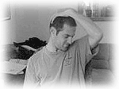
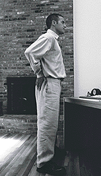
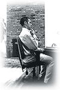
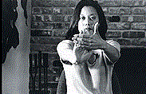
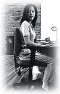

|
Technook
Why
it hurts to work at the Computer
contributed
by: Joie Alvarez
Microtrauma
is the gradual wear and tear on the body from everyday activities.
Most injuries that occur at a computer work station are the
result of cumulative microtrauma. This type of injury does
not occur suddenly, like a broken arm or leg (macrotrauma).
It may take several months or years of poor posture or a repetitive
motion before you feel any pain.
This
tutorial is based on ErgAerobics, an injury prevention program
that will significantly decrease your chances of becoming
the victim of Computer Induced Repetitive Stress Injuries.
Here are the following guidelines for preventing these common
injuries.
Be
sure to have a proper work station set-up. This is an essential
step toward preventing muscle aches and pains and reducing
work fatigue. Once properly arranged, it is vital that you
position yourself correctly at your workstation.
Ergonomic
exercises are the key to productivity and health. The exercises
described in this tutorial -- what we call "ErgErcises"
-- will increase your endurance and overall productivity.
They can be performed anytime, anywhere. ErgErcises are simple,
inconspicuous, and take no time at all. They can be done during
coffee breaks, talking on the phone, or waiting at a bus stop.
Practicing
ErgErcises will help you maintain excellent physical health,
and before you know it, will become your unconscious way of
doing things for a healthier, pain-free body.
Muscle
Pose Stretch
Position:
Sitting
-
Place your head in the neutral position, looking straight
ahead.
-
Place your left hand on the back of your head.
-
Keeping your hand on your head, rotate your head half-way
toward your left shoulder (45 degrees).
-
Keeping your back straight, gently pull your head toward
your left knee.
Hold For: 10 seconds
Repetitions: 5-10 times
-
Repeat to your right side using your right hand.
Purpose:
- Stretches
the levator scapula (muscle in the back of your neck that
holds your head up).
- Increases
blood flow through the neck and into and out of the head
and arm.
- Prevents
neck, upper back and arm pain.
Skywatcher
Position:
Standing
-
Place your hands on your hips.
-
Slowly lean back, looking up at the sky or ceiling.
- Return
to the starting position.
Repetitions:
10 times
Purpose:
- Reverses
the effects of sitting for long periods of time.
- Prevents
Lumbar Disc Herniations.
Egyptian
Position:
Sitting or Standing
-
Look straight ahead, not up or down.
-
Press your chin with your index finger.
- 
Glide your head back on your neck.
Tip:
Keep looking straight ahead throughout this movement. Be sure
not to look up or down. To accomplish this, imagine someone
is pulling from behind you on a string running through your
chin.
Hold
For: 5 seconds
Repetitions:
10 times
Purpose:
- Strengthens
the postural muscles in the back of the neck.
- Prevents
pain in the neck region.
- Prevents
Carpal Tunnel Syndrome, Forward Head Posture, TMJ Dysfunction,
Cervical Disc Herniation, and Thoracic Outlet Syndrome
Speak
to the Hand
Position:
Sitting or Standing
- Straighten
your left arm out in front of you as if you were pointing
at something at shoulder height.
-
Bend your left wrist back so that your fingers point towards
the ceiling.
- With
your right hand, gently pull back on your left hand fingers,
bending your wrist back a little further.
Hold For: 10 seconds
Repetitions:
10 times
-
Straighten your right arm out in front of you as if you
were pointing at something at shoulder height.
-
Bend your right wrist back so that your fingers point towards
the ceiling.
-
With your left hand, gently pull back on your right hand
fingers, bending your wrist back a little further.
Purpose:
- Stretches
the wrist flexors and finger flexors (muscles that run through
the carpal tunnel and insert into the palm of the hand).
- Increases
circulation through the wrist and hand.
- Prevents
Carpal Tunnel Syndrome.
Desk
Lift
Position: Sitting
-
Rest your forearms on your armrests.
-
Place your hands under your desk with your palms facing
up.
-
Press the palms of your hands up against the underside of
the desktop. Do not actually lift the desk, simply tighten
the muscles in your forearm that would perform a lift.
Tip:
Don’t press too hard, the idea is just to activate the muscles
for strengthening purposes.
Hold
For: 5 seconds
Repetitions:
5 times
Purpose:
- Strengthens
the wrist flexors (muscles running from your wrists up to
the inner side of your elbows).
- Prevents
Carpal Tunnel Syndrome.
Abra
Cadabra
Position:
Sitting
-
Rest your arms on your armrests with your wrists straight.
-
Face your palms toward the floor.
-
Abra = Slowly close your hands
-
Cadabra = Slowly open your hands.
Repetitions:
10 times
Purpose:
- Increases
blood flow to your hands.
- Relieves
tension in the wrists and hands.
- Flushes
waste products from the carpal tunnel region and the hands.
- Prevents
Carpal Tunnel Syndrome.
Copyright
© 1998: ErgAerobics,
Inc.
|